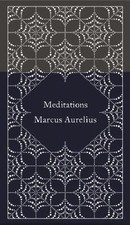

Library › Psychology & People
Meditations — Summary & Key Lessons

The private journal of a Roman emperor — 2,000 years of Stoic wisdom on control, mortality, and character.
📖 OPEN THE FULL INTERACTIVE BREAKDOWN →🌐 Read it in Hindi, Hinglish, Gujarati, Tamil & 22 more languages — free, with audio.
💡 The Big Idea
Marcus Aurelius ruled Rome at its height — through plague, war, betrayal, and the deaths of most of his children — while writing private notes to himself that he never intended anyone to read. Meditations is that notebook: the most powerful man alive coaching himself daily on the same struggles you have — anger at difficult people, fear of death, distraction, vanity, despair. Its Stoic core: divide everything into what you control (your judgments, intentions, responses) and what you don't (everything else); pour yourself totally into the first, accept the second like weather. Obstacles become fuel. Death makes now precious. Character is the only possession.
🧠 The 6 Key Lessons
Lesson 1: The Dichotomy of Control
Books 2, 4–6 (recurring theme)
The master key of Stoicism: some things are up to us (judgments, desires, actions, responses) and some are not (our reputation, others' behavior, illness, markets, weather, the past). Suffering comes almost entirely from staking happiness on the second category. Marcus reminds himself relentlessly: the event is never the injury — the OPINION about the event is; 'reject your sense of injury and the injury itself disappears.' This isn't passivity: you act vigorously on the world, but you locate your peace only in what cannot be taken. The archer aims perfectly and releases; the wind owns the rest.
📖 Example: Marcus writes these reminders while commanding legions on the Danube frontier during a devastating war and the Antonine plague that killed millions — including, eventually, members of his own household. The emperor who controlled more than any living human… Read the full example →
⚡ Do this: Tonight, split your current worries into two columns: 'up to me' / 'not up to me.' Act on column one tomorrow morning; consciously release column two — reread the split whenever anxiety returns.
Lesson 2: The Obstacle Becomes the Way
Book 5.20
The line that launched a modern movement: 'The impediment to action advances action. What stands in the way becomes the way.' Marcus' insight is that obstacles don't merely test virtue — they are the raw material of it: injustice is the occasion for justice, insult the occasion for patience, loss the occasion for courage, difficult people the gymnasium for your character. Fire uses everything thrown into it as fuel. The reframe is total: you stop hoping for an obstacle-free path (which doesn't exist) and start treating each blockage as this hour's specific assignment. Nothing that happens is outside the curriculum.
📖 Example: Marcus' reign was the curriculum incarnate: a flood, a plague, constant frontier wars, a currency crisis, and the betrayal of Avidius Cassius — his most trusted general, who declared himself emperor. Marcus' response to the revolt stunned Rome: no rage, no… Read the full example →
⚡ Do this: Take your current biggest obstacle and finish this sentence: 'This is my opportunity to practice ___.' Then practice exactly that virtue against it, deliberately, this week.
Lesson 3: Morning Preparation: Expect Difficult People
Book 2.1
Marcus' most famous passage is a morning ritual: 'When you wake, tell yourself: today I will meet the interfering, the ungrateful, the arrogant, the deceitful, the envious, the antisocial...' Not cynicism — inoculation. Expecting difficulty removes its power to shock, and the passage's second half removes its power to embitter: these people err through ignorance of good and evil, they share your nature, and you were made to work with them 'like hands, like feet, like eyelids.' Anger at humans for being human, Marcus tells himself, is as absurd as anger at a fig tree for producing figs. Prepare, then cooperate.
📖 Example: Consider his position: emperors were surrounded by history's most concentrated collection of flatterers, schemers, and assassin-adjacent courtiers. Marcus' journal shows no purges and no paranoia — the morning rehearsal apparently worked. Modern translation:… Read the full example →
⚡ Do this: Adopt the ritual for one week: each morning, name the specific difficult behaviors you'll likely meet today — then add Marcus' clause: 'and I will work with them anyway, because that's what I'm built for.'
Lesson 4: Memento Mori: Let Death Set Your Priorities
Books 2–4 (recurring)
'You could leave life right now. Let that determine what you do and say and think.' Marcus keeps death on his desk not as morbidity but as a lens: it dissolves vanity (Alexander the Great and his mule driver came to the same end), procrastination ('stop wandering — you will not read your own notebooks again'), and the tyranny of others' opinions (the fame-chasers and their audiences are both mortal; posthumous applause is applause you'll never hear). The practice makes time real: this task, this conversation, this day might be the last of its kind — a thought that instantly sorts the trivial from the essential better than any productivity system.
📖 Example: Marcus lists the great courts of the past — Augustus' entire entourage, wife, daughter, generals, friends — 'all dead'; whole dynasties reduced to a line in a ledger. He wrote knowing his own body was failing (he likely died of plague at 58, on campaign,… Read the full example →
⚡ Do this: Run the filter once daily for a week: before your biggest time commitment, ask 'would this survive if I knew I had one year?' Cut or shrink one thing that fails; expand one thing that passes.
Lesson 5: The Inner Citadel: Retreat Into Yourself
Book 4.3
People seek retreats — beaches, mountains, countryside — and Marcus calls this 'idiotic,' because the only retreat that works is available every minute: withdrawal into your own mind. The inner citadel is the practice of ordered thought: a few core principles, rehearsed until they're reflexes, that no external chaos can breach. His maintenance routine: keep judgments few and fundamental, refuse the mind's addiction to others' business ('waste no time wondering what your neighbor says or thinks'), and cleanse impressions before they harden into disturbance. Serenity isn't a location or an absence of noise — it's a well-governed interior. 'The nearer a man comes to a calm mind, the closer he is to strength.'
📖 Example: Marcus wrote much of Meditations in an army camp on the Danube — mud, plague, war councils, no beaches available. Book 4.3 is him proving the thesis in real time: surrounded by the least tranquil environment in the empire, he manufactures tranquility on… Read the full example →
⚡ Do this: Build your citadel: write your 3–5 non-negotiable principles on a card. Retreat to them — literally reread the card — instead of your phone, three times daily for a week.
Lesson 6: Justice: Made for Cooperation, Judged by Action
Books 5, 8, 11
Stoicism's social core, easy to miss under the self-mastery: humans are made for each other — 'what injures the hive injures the bee' — and a life curated for private tranquility while shirking contribution is a Stoic failure. Marcus' standards: do good without keeping score (like the vine producing grapes, seeking no applause for it); when wronged, correct or endure without contamination ('the best revenge is to be unlike him who performed the injury'); and skip the philosophy seminar — 'waste no more time arguing what a good man should be; BE one.' Character is verdict-by-action: your value equals the value of what you pursue, demonstrated daily, unadvertised.
📖 Example: During the plague and treasury crisis, Marcus sold the imperial palace furnishings — his own possessions — to fund relief rather than raise taxes on a suffering population. No surviving decree brags about it. The gesture matches his journal's private… Read the full example →
⚡ Do this: Do one significant good this week that cannot be discovered — no mention, no post, no hint. Notice how the anonymity changes (and purifies) the motivation.
✅ 5-Step Action Plan
- Split every worry: up to me / not up to me — act only on column one.
- Reframe your biggest obstacle as this week's virtue assignment.
- Run the morning rehearsal for difficult people daily.
- Apply the mortality filter to one commitment per day.
- Write your principles card, and do one untraceable good deed.
⚠️ When This Doesn't Work
Stoic acceptance becomes dangerous when it slides into fatalism about things that ARE in your control — a treatable illness, a fixable job, an abusive situation. Marcus Aurelius never had chemotherapy or therapy available; his 'endure' was the best tool of his era, not yours. Use Stoicism to calm the anxiety, then use modern tools to actually change what Stoics could only accept. Even a Stoic emperor died at 58 — he would have taken the medicine.
💀 The Graveyard Proves It
🍏 Steve Jobs — Nine Months of Fruit Juice vs. Cancer. Burn: Possibly his life. Read the full case study →
💬 Best Quotes from Meditations
- “You have power over your mind — not outside events. Realize this, and you will find strength.”
- “The impediment to action advances action. What stands in the way becomes the way.”
- “Waste no more time arguing about what a good man should be. Be one.”
Interactive version: mark lessons as read, listen in your language, share quote cards.